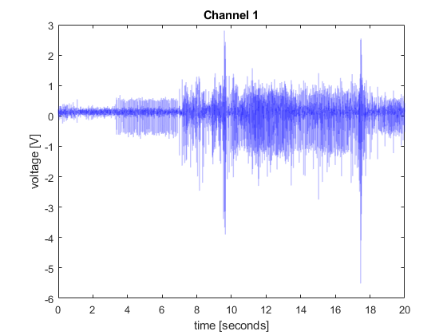
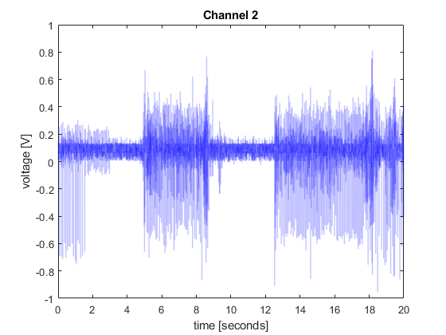
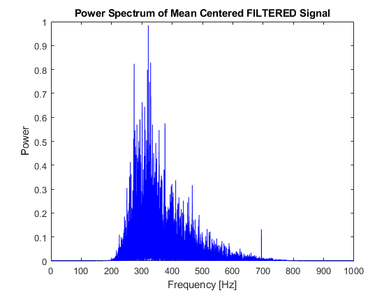
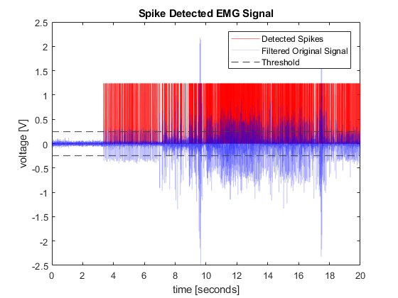
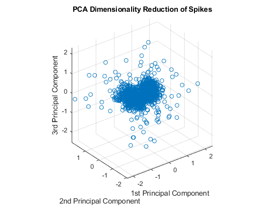
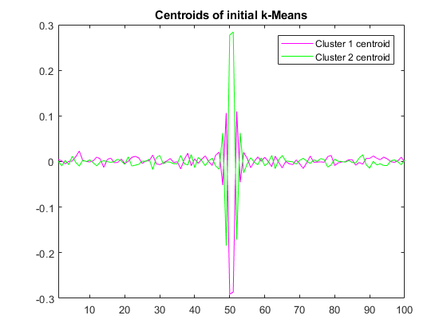

Contents
Shakthi Visagan 804622954
Administrative Code
clc;
clear all;
close all;
format compact;
Input File
M = csvread('EMG_example_2_fs_2k.csv');
csvSize = size(M);
disp('CSV file rows: ');
disp(csvSize(1));
disp('CSV file columns: ');
disp(csvSize(2));
time = M(:,1);
numTimeSteps_holder = size(time);
numTimeSteps = numTimeSteps_holder(1);
disp('number of time steps: ');
disp(numTimeSteps);
freq_samp = (time(2)-time(1))^(-1);
disp('sampling frequency: [Hz]');
disp(freq_samp);
freq_Nyquist = freq_samp/2;
disp('Nyquist frequency: [Hz]');
disp(freq_Nyquist);
numChannels = csvSize(2)-1;
channelData = M;
channelData(:,1)= [];
for i=1:numChannels
str= sprintf('Channel %d',i);
disp('working on ... ');
disp(str)
figure('Name',str,'NumberTitle','off','Color','white');
p = plot(time, channelData(:,i), 'LineWidth', 1);
p.Color = [0,0,1,0.125];
xlabel('time [seconds]');
ylabel('voltage [V]');
title(str);
xlim([time(1) time(end)]);
hold off;
end
channel_select = 1;
test_input = channelData(:,channel_select);
CSV file rows:
40500
CSV file columns:
5
number of time steps:
40500
sampling frequency: [Hz]
2000
Nyquist frequency: [Hz]
1000
working on ...
Channel 1
working on ...
Channel 2
working on ...
Channel 3
working on ...
Channel 4
 
Filtering the Signal by Removing Frequencies
signal_mean = mean(test_input);
disp('signal mean: ')
disp(signal_mean)
y = fft(test_input-signal_mean);
n = length(test_input);
f = (0:n-1)*(freq_samp/n);
power = abs(y).^2/n;
figure('Name','Power Spectrum of Mean Centered Signal','NumberTitle','off','Color','white');
fftPlot = plot(f,power);
fftPlot.Color = [0,0,1,1];
xlim([time(1) freq_Nyquist]);
xlabel('Frequency [Hz]');
ylabel('Power');
title('Power Spectrum of Mean Centered Signal');
hold off;
freq_lowerCutOff = 250;
freq_upperCutOff = 800;
[b,a] = butter(4, [freq_lowerCutOff/(freq_Nyquist),freq_upperCutOff/(freq_Nyquist)], 'bandpass');
filt_sig = filtfilt(b, a, test_input);
figure('Name','Filtered Signal','NumberTitle','off','Color','white');
a = plot(time, filt_sig, time, test_input);
a(1).Color = [1,0,0,0.5];
a(2).Color = [0,0,1,0.125];
legend('Filtered Signal', 'Original Signal')
title('Filtered EMG Signal');
ylabel('voltage [V]')
xlabel('time [seconds]');
xlim([time(1), time(end)]);
hold off;
filt_sig_mean = mean(filt_sig) ;
disp('filtered signal mean: ')
disp(filt_sig_mean)
y_filt = fft(filt_sig-filt_sig_mean);
n_filt = length(filt_sig);
f_filt = (0:n_filt-1)*(freq_samp/n_filt);
power_filt = abs(y_filt).^2/n_filt;
figure('Name','Power Spectrum of Mean Centered FILTERED Signal','NumberTitle','off','Color','white');
fft_filtPlot = plot(f_filt,power_filt);
fft_filtPlot.Color = [0,0,1,1];
xlim([time(1), freq_Nyquist]);
xlabel('Frequency [Hz]')
ylabel('Power')
title('Power Spectrum of Mean Centered FILTERED Signal')
hold off;
signal mean:
0.0630
filtered signal mean:
1.7731e-06
 

Detecting Spikes
std_dev_estimate = median(abs(filt_sig)/0.6745);
MPH_Thr = 6*std_dev_estimate;
MPD = 5e-3;
[peaks,time_locs] = findpeaks(abs(filt_sig),'MinPeakHeight', MPH_Thr, 'MinPeakDistance',MPD);
detected_spike_vis = zeros(numTimeSteps_holder);
detected_spike_vis(time_locs) = max(abs(filt_sig))/2;
threshold_vis_plus = zeros(numTimeSteps_holder);
threshold_vis_minus = threshold_vis_plus-MPH_Thr;
threshold_vis_plus = threshold_vis_plus+MPH_Thr;
figure('Name','Detecting Spikes','NumberTitle','off','Color','white');
b = plot(time, detected_spike_vis, time, filt_sig, time, threshold_vis_plus, '--', time, threshold_vis_minus, '--');
b(1).Color = [1,0,0,0.5];
b(2).Color = [0,0,1,0.125];
b(3).Color = [0.25,0.25,0.25,1];
b(4).Color = [0.25,0.25,0.25,1];
legend('Detected Spikes', 'Filtered Original Signal', 'Threshold');
title('Spike Detected EMG Signal');
ylabel('voltage [V]')
xlabel('time [seconds]');
xlim([time(1), time(end)]);
hold off;
Aligning Spikes
point_dist_per_spike = MPD*(40*freq_samp);
desired_point_dist_per_spike = round(point_dist_per_spike/4);
detected_spikes_holder = zeros(length(peaks), desired_point_dist_per_spike);
for peak_i=1:length(peaks)
begin = time_locs(peak_i) - point_dist_per_spike/2;
if begin <1
begin = 1;
end
endin = time_locs(peak_i) + point_dist_per_spike/2;
if endin > numTimeSteps
endin = numTimeSteps;
end
spike_spline = spline(time(begin:endin), filt_sig(begin:endin), linspace(time(begin),time(endin), desired_point_dist_per_spike));
detected_spikes_holder(peak_i, :) = spike_spline;
end
figure('Name','Detecting and Aligning Spikes','NumberTitle','off','Color','white');
for peak_i=1:length(peaks)
plot(detected_spikes_holder(peak_i,:))
xlim([1,desired_point_dist_per_spike]);
hold on;
end
title('Spike Detected w/ Buffer Region and Cubic Spline Interpolation EMG Signal');
ylabel('voltage [V]')
hold off;

t-SNE Latent Space Measurements
rng default
[Y3,loss3] = tsne(detected_spikes_holder,'NumDimensions',3, 'Distance', 'correlation');
disp('t-SNE loss: ')
disp(loss3)
figure('Name','t-SNE','NumberTitle','off','Color','white');
scatter3(Y3(:,1),Y3(:,2),Y3(:,3))
title('3-D Embedding t-SNE for Spikes')
view(-50,8)
axis equal
hold off;
t-SNE loss:
3.1332
PCA Dimensionality Reduction / Feature Extraction
[coeff,score,latent,~,explained] = pca(detected_spikes_holder);
disp('Percent Variance explained: ')
disp(explained)
figure('Name','PCA','NumberTitle','off','Color','white');
scatter3(score(:,1),score(:,2),score(:,3))
axis equal
xlabel('1st Principal Component')
ylabel('2nd Principal Component')
zlabel('3rd Principal Component')
title('PCA Dimensionality Reduction of Spikes')
hold off;
pca_score_holder = score(:,1:3);
Percent Variance explained:
3.6938
1.8653
1.7308
1.6651
1.5970
1.5770
1.5300
1.4995
1.4911
1.4554
1.4366
1.4043
1.3825
1.3643
1.3500
1.3389
1.2876
1.2767
1.2718
1.2472
1.2305
1.2229
1.2063
1.1970
1.1889
1.1845
1.1698
1.1499
1.1419
1.1324
1.1268
1.1100
1.0988
1.0844
1.0804
1.0716
1.0539
1.0493
1.0458
1.0284
1.0173
1.0139
1.0049
0.9954
0.9832
0.9760
0.9595
0.9538
0.9504
0.9318
0.9191
0.9146
0.9104
0.9020
0.8943
0.8768
0.8703
0.8661
0.8569
0.8483
0.8435
0.8277
0.8261
0.8178
0.8133
0.8088
0.7953
0.7886
0.7757
0.7679
0.7671
0.7594
0.7464
0.7433
0.7337
0.7302
0.7169
0.7123
0.7042
0.6961
0.6915
0.6882
0.6594
0.6544
0.6534
0.6350
0.6326
0.6243
0.6124
0.6034
0.5919
0.5820
0.5773
0.5687
0.5555
0.5545
0.5407
0.5216
0.5151
0.4803

k-Means Clustering
[k_means_prim_idx] = kmeans(pca_score_holder,2, 'Distance', 'cityblock');
spike_clust1 = detected_spikes_holder(k_means_prim_idx==1,:);
spike_clust2 = detected_spikes_holder(k_means_prim_idx==2,:);
figure('Name','Initial Clustering','NumberTitle','off','Color','white');
for peak_i=1:length(spike_clust1)
c = plot(spike_clust1(peak_i,:), 'm');
c.Color= [1,0,1,0.125];
xlim([1,desired_point_dist_per_spike]);
hold on;
end
hold on
for peak_i=1:length(spike_clust2)
d = plot(spike_clust2(peak_i,:), 'g');
d.Color= [0,1,0,0.125];
xlim([1,desired_point_dist_per_spike]);
hold on;
end
title('Initial Cluster Assignments')
legend('Cluster 1', 'Cluster 2');
hold off
figure('Name','Centroids','NumberTitle','off','Color','white');
e = plot(mean(spike_clust1), 'm');
hold on;
f = plot(mean(spike_clust2), 'g');
xlim([1,desired_point_dist_per_spike]);
title('Centroids of initial k-Means')
legend('Cluster 1 centroid', 'Cluster 2 centroid');
hold off;
k-Means Clustering 2
[m,~] = size(spike_clust1);
ToTest=ceil(sqrt(m));
D=zeros(ToTest,1);
for c=1:ToTest
[~,~,dist]=kmeans(spike_clust1,c,'emptyaction','drop','Distance', 'cityblock');
tmp=sum(dist);
for cc=2:3
[~,~,dist]=kmeans(spike_clust1,c,'emptyaction','drop','Distance', 'cityblock');
tmp=min(sum(dist),tmp);
end
D(c,1)=tmp;
end
Var=D(1:end-1)-D(2:end);
PC=cumsum(Var)/(D(1)-D(end));
[r,~]=find(PC>0.95);
K=1+r(1,1);
K = round(K/10);
[IDX1,C1,~]=kmeans(spike_clust1,K,'Distance', 'cityblock');
figure('Name','Centroids of Cluster 1','NumberTitle','off','Color','white');
plotcolormap = jet(K);
for peak_i=1:K
blah = C1(peak_i,:);
blah_short = blah(45:55);
blah_spline = spline(45:55, blah_short, 45:0.1:55);
g = plot(blah_spline);
g.Color = plotcolormap(peak_i,:);
hold on;
end
title('Sorted Spikes in Cluster 1')
hold off;
figure('Name','Final Clustering','NumberTitle','off','Color','white');
for k=1:K
spike_clist_fin = spike_clust1(IDX1==k,:);
[sizer,~] = size(spike_clist_fin);
for peak_i=1:sizer
c = plot(spike_clist_fin(peak_i,:));
c.Color = plotcolormap(k,:);
xlim([1,desired_point_dist_per_spike]);
hold on;
end
end
title('Final Cluster Assignments')
hold off;